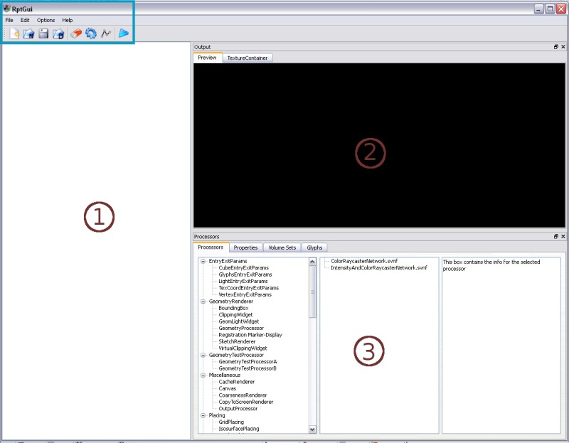
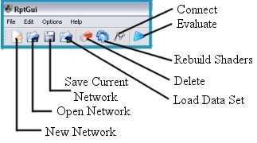
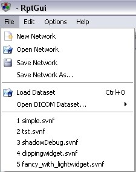
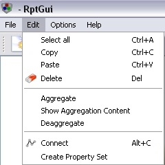
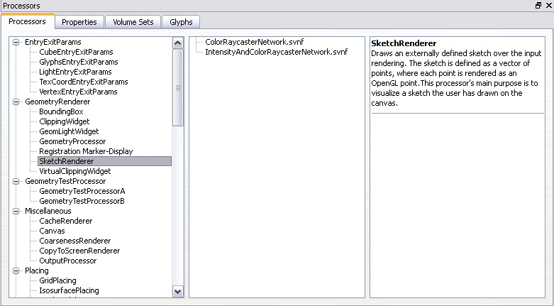

VoreenVE - Getting Started
VE is an acronym for "visualization environment". The VoreenVE is a useful tool to construct processor networks for Voreen by providing a comfortable graphical user interface. It allows to create complex rendering networks with the mouse by simply dragging the desired processors into the workspace and linking them by drawing the required connections. Due to the VoreenVE there is no need for users to construct rendering networks by writing program code
Table of Contents
Main Window
The following window appears by starting the VoreenVE application:

- The blue box shows the menu and toolbar of the VoreenVE.
- The red numbers indicate the main components:
- The workspace shows the current network and lets the user change it interactively.
- The preview visualizes the output produced by the current network (you need to press the evaluate button
 to start the rendering).
to start the rendering).
- The processors and their properties are placed here.
Menu and Toolbar
The menu and the toolbar offer actions for the network handling. Commonly used actions are not only accesible via the menu but have additionally shortcut buttons in the toolbar. The pictures below show the toolbar entries and their function.

- New Network: unload the current network and clear the workspace.
- Open Network: start the "open file" dialog for loading a network.
- Save Current Network: save the current network. If there is no network to overwrite the "save file as" dialog asks for a new file name.
- Load Data Set: load a data set with the "open data set" file dialog.
- Delete: delete the selected item(s).
- Rebuild Shaders: rebuild all currently loaded GLSL shaders.
- Connect: connect ports obviously belonging together automatically.
- Evaluate: start the current network and displays its output in the preview area.
The menu contains some further actions:
|  |
- Open DICOM Data Set: Open a data set in DICOM format. Either a DICOMDIR file can be used or the content of a whole directory can be loaded.
- The Recent Files List: stores the five last opened (and saved) networks for quick access.
|
|  |
- Select All: select all processor items in the working area.
- Copy: copy the selected items into the clipboard.
- Paste: paste items stored in the clipboard into the workspace.
- Aggregate: merge the selected items into an aggregation.
- Show Aggregation Content: if checked, the items contained in an aggregation are shown in a yellow box.
- Deaggregate: detach processors from an aggregation and delete it.
- Create Property Set: create a property set containing all properties the selected processors have in common (see section 3).
|
 |
- Reuse TC Targets enables/disables the reuse of intermediate results stored in textures (internally called texture container targets).
|
The Workspace
First Steps
In the workspace the graphical representation of the current network is shown. In order to build a rendering network, you can simply add new processors by drag'n'drop them from the processor list into the workspace. The ports have to be connected taking into account that rendering networks for Voreen are directed and that their port types have to match (different types are identifiable by their colors).
Ports are connected by pressing the left mouse button over an outport and dragging the appearing arrow to an inport. The arrow indicates whether a connection to the inport at the current mouse position is possible or not by changing its color to green respective red. Releasing the mouse button over a valid inport (green arrow) creates a connection.
Processors
This image shows how a processor is visualized in Voreen:

As you have noticed, there are several kinds of ports: inports are placed on the upper side of each processor item, outports on the lower side and coports on the side. Coports are used for processors which cannot work alone; a proxy geometry processor for example cannot work without a entry/exit points processor.
Working with Networks
In the following the editing of networks is explained. Some of the actions can also be achieved by using the corresponding entries of the toolbar or the menu. Speaking about items covers processors and aggregations.
- An item can be moved by clicking on it, moving it to the desired position and releasing the mouse button.
- You can select an item by simply left-clicking it. Multiple items can be selected by pressing ctrl and selecting another one or by spanning a rectangle over the items using the left mouse button beside all items (thus clicking on empty space within in the workspace).
- Naming/Renaming a processor or an aggregation can be done using the context menu.
- Item(s) can be deleted by selecting them and either using the delete entry from the context menu or just pressing del.
- Aggregating multiple processors into a single unit is done by selecting all processors to be aggregated, right-clicking on one of them and choosing "Aggregate" from the context menu. The aggregation shows only the inport and outports needed for interacting with other processors and hides all internal connections. The context menu provides some additional functions:
- You can display the content of an aggregation by double clicking it or using the corresponding context menu entry.
- To deaggregate simply use the proper context menu entry.
- You can Save an aggregation via the context menu. After this, the aggregation will appear in the aggregations list of the processor area (see section 3).
- The workspace can be zoomed in and out via the mouse wheel.
- You can move the workspacce using the shift key in combination with the left mouse button and mouse movement (click on empty space).
- You can copy'n paste selected item(s) using the context menu of the workspace.
After building a network you can start it bei evaluating it using from the toolbar. If no error occurs, an output image is rendered and displayed in the output area (described in the next section).
Connections handling image data provide tooltips for showing the images. You just have to pause the mouse over an arrow. (This works properly only if you disable the "Reuse TC targets" option. Otherwise intermediate reults will be overwritten.).

The Output Area
After setting up a valid network you can start it by clicking on the toolbar item . The output of the network is then visualized in the output area. You can rotate the visualization by moving the mouse in the area while pressing the left mouse button. Using the mouse wheel or moving the mouse up and down while pressing the right mouse button, zooms the visualization. Pressing shift and the left button moves the scene.

The second tab shows the content of the textures containing all image data. A left-click enlarge a texture, a second click shrinks it again. With the context menu, alpha-channels and depth buffers are accessible.

The Processor Area
The processor area provides several tabs dealing with properties, information and aggregation of processor items.

Processors
The first tab, the "Processors" tab, contains three columns. In the left column a list of all available processors is shown. Aggregations are placed in the middle—here appear aggregations saved by the user. In the right column information is given describing briefly function and features of selected processors. Processors selected within the workspace are indicated by green captions, processors picked from the list are displayed black. After evaluating the network a detailed description of the entire network and its connections appears here as well.

You can add processors and aggregations to your network simply by drag'n drop them from the lists.
Properties
This tab deals with properties and attributes of the network and its elements. It gets the focus by choosing the tab or by double-clicking an item in the workspace.
In the left column all properties (excep the transfer function) of a selected processor are available and can be modified. If a processor uses a transfer function or thresholds, these can be modified with the transfer function editor in the right area.
VolumeSets
This tab displays the currently loaded data sets. They can be selected using the properties of a VolumeSetSource processor.
Glyphs
This tab provides some special parameters for glyph visualization.